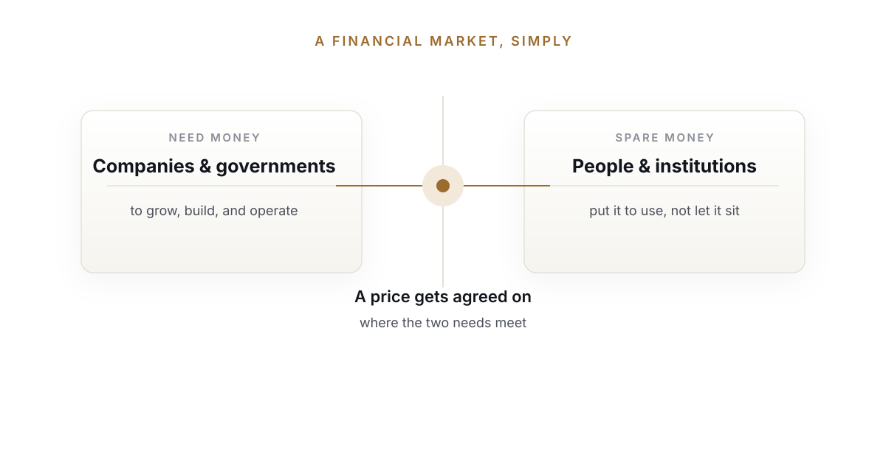
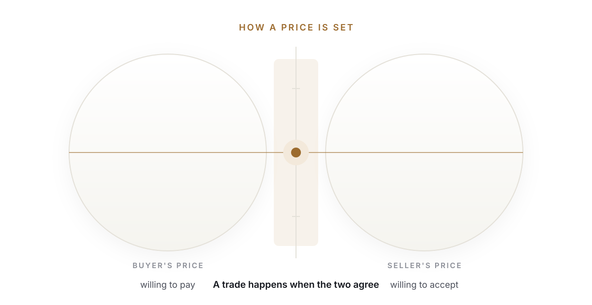
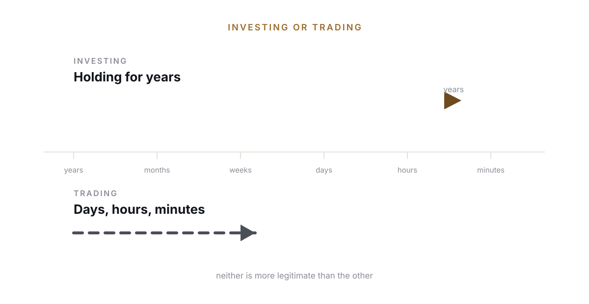
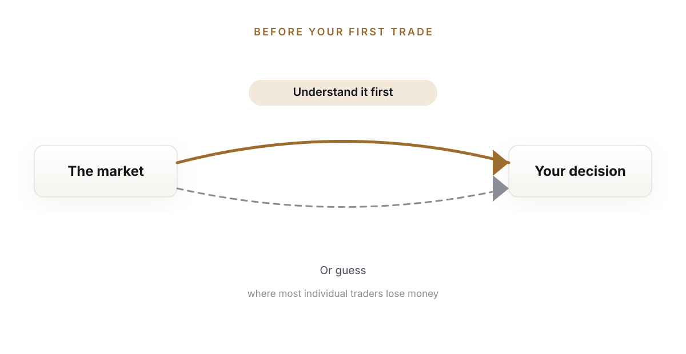
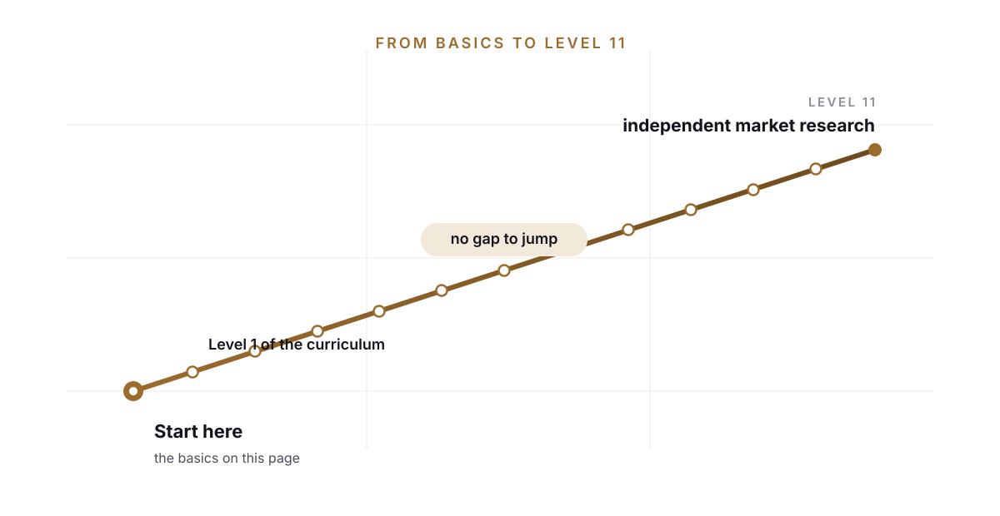

Market education in plain language.
New to the stock market?
Start here. We break down the
basics in the simplest way possible.
Just clear explanations.
make concepts simple.
No prior knowledge needed.
for your market journey.
What is a financial market, really?
A market, in the everyday sense, is a place where people buy and sell things. A vegetable market trades vegetables. A financial market trades financial things instead: ownership in companies, loans, currencies, and a few other instruments. It exists for a simple reason. Companies and governments need money to grow, build, and operate. People and institutions with spare money want a way to put it to use instead of letting it sit still. A financial market is where those two needs meet, and a price gets agreed on.


What is the stock market, specifically?
A stock, also called a share, is a small ownership slice of a company. If a company has one crore shares outstanding and you own one share, you own one ten-millionth of that company. Companies sell shares to raise money, first when they go public, and after that, those existing shares trade between investors on an exchange like the NSE or BSE.
Nobody sets the price by decree. It moves because, at any given moment, buyers and sellers disagree slightly on what a fair price is, and every trade is really two people finally agreeing. Multiply that by millions of trades a day and you get a moving price. That constant back-and-forth negotiation is, underneath everything, a live auction, running continuously. That single idea, that price comes from an ongoing auction rather than a fixed number, is the entire foundation TradeSchool's curriculum is built on. More on that when you're ready to go deeper.
Investing or trading, in one line
Investing means holding ownership for years, betting on a business doing well over time. Trading means buying and selling over much shorter windows, days, hours, sometimes minutes, based on how price is moving right now rather than the long-term health of the business. Neither is more legitimate than the other. They're different skills, and confusing the two is one of the most common ways people lose money without realizing which game they were playing.


Why understanding this matters
You could skip all of this and place a trade tomorrow. Most people do exactly that. It's a large part of why SEBI's own research found that most individual traders in India lose money rather than make it. Understanding the market doesn't guarantee a profit, nothing does, but trading without understanding it is closer to guessing than investing, and the data reflects that difference clearly.
Where this leads
Everything above is genuinely enough to start following the market sensibly. If you want to go further, and eventually trade or invest with real skill instead of guesswork, that's exactly where The Art of Making Wealth picks up. Level 1 of the curriculum assumes exactly the knowledge on this page and nothing more, so there's no gap to jump.
